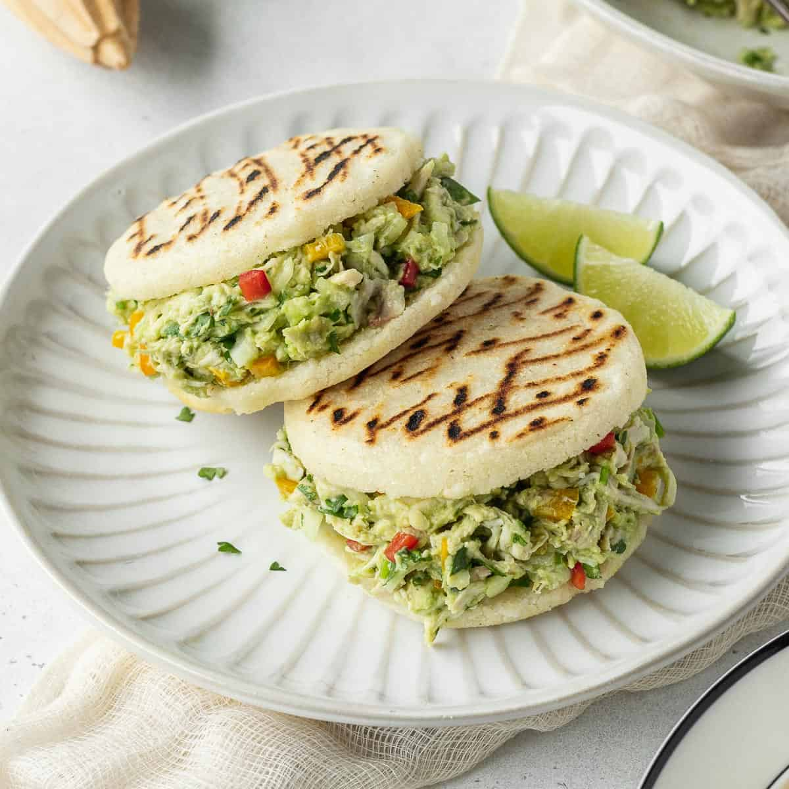

Arepas

A South American staple, particularly in Columbia and Venezuela, arepas are stuffed cornmeal cakes that are crispy outside and fluffy inside. They're a popular food item for street vendors, but are also regularly made in homes. Arepas are eaten at all times of the day, often as a snack or side dish to a main meal.
Ingredients
- ½ cups lukewarm water
- 1 teaspoon salt
- 2 cups pre-cooked white cornmeal (such as P.A.N.®)
- ¼ cup vegetable oil, or as needed
Steps
It's not rocket science, and anyone can make it.
So let's begin.
- Stir water and salt together in a medium bowl; gradually stir in cornmeal with your fingers until the mixture forms a soft, moist, malleable dough.
-
Form dough into eight 2-inch diameter balls; pat each ball to flatten into a 3/8-inch-thick arepa patty.
(Just make a circle with the dough, take your index finger as a reference of how thick it must be) -
Heat oil in a large skillet over medium heat; fry arepas in batches until golden brown, about 4 to 5 minutes per side. Transfer cooked arepas to a paper towel-lined plate to drain until cool enough to handle.
(Grilling or smoking them is possible with just a lid covering them.Also you can deep-fry them, just make sure to make a hole in the middle of the dough ;D iykyk) - Slice halfway through each arepa horizontally with a thin serrated knife to form a pita-like pocket.
-
you can fill them with pretty much anything really, if you think about it, it's almost like bread ¯\_(ツ)_/¯.
(if you have chicken, mayonnaise, avocado and purple onion, you can make something called 'Reina pepiada' in its most simple and basic form )